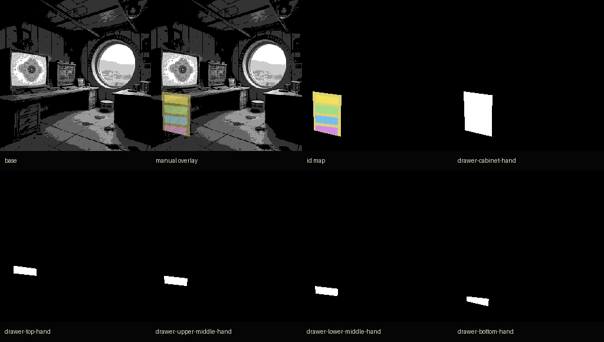

Manual Drawer Annotation Reference
Hand reference for drawer cabinet and individual drawer faces. This is not model output.

Best automatic match against these hand masks is still weak:
drawer-top-hand: best IoU 0.198drawer-upper-middle-hand: best IoU 0.315drawer-lower-middle-hand: best IoU 0.180drawer-bottom-hand: best IoU 0.160
Interpretation: the current automatic route can find nearby fragments, but it does not recover human-intended drawer faces.